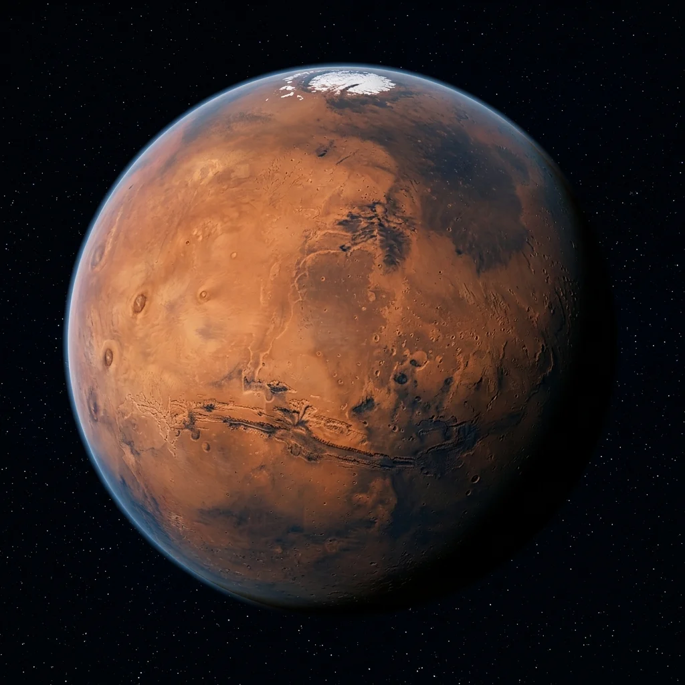

Foundational STEAM lesson for Mars.
Mars is the fourth planet from the Sun and a desert world with a thin carbon dioxide atmosphere. Its characteristic reddish tint comes from oxidized iron minerals (rust) in its regolith, harboring geological giants like Olympus Mons—the solar system's largest volcano—and the grand canyon system of Valles Marineris.
